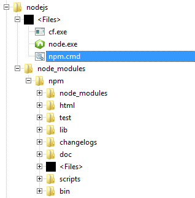
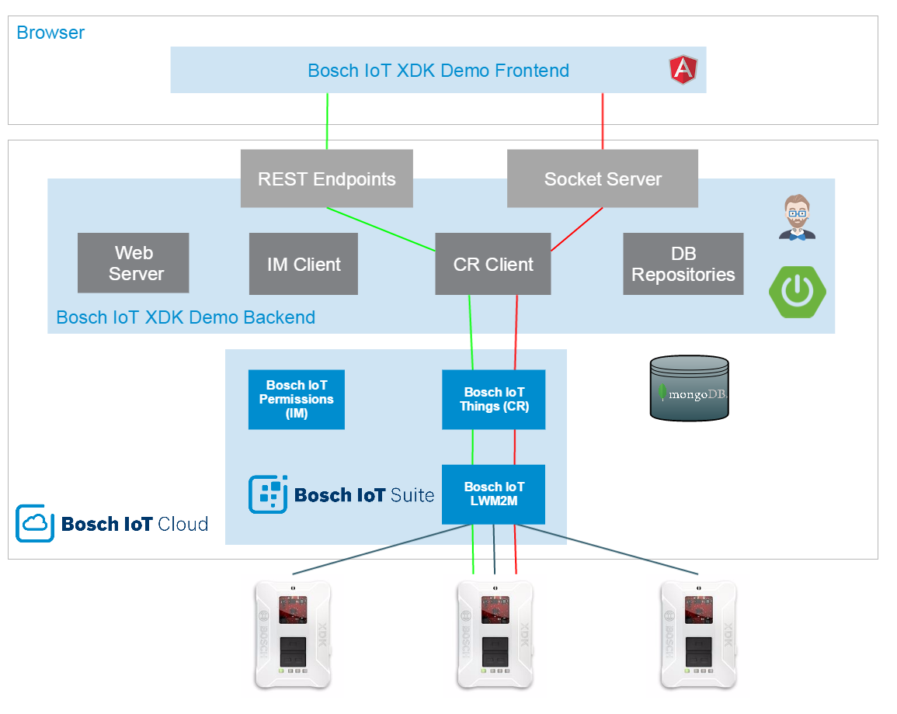
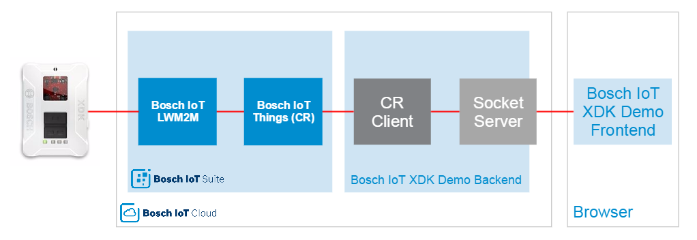
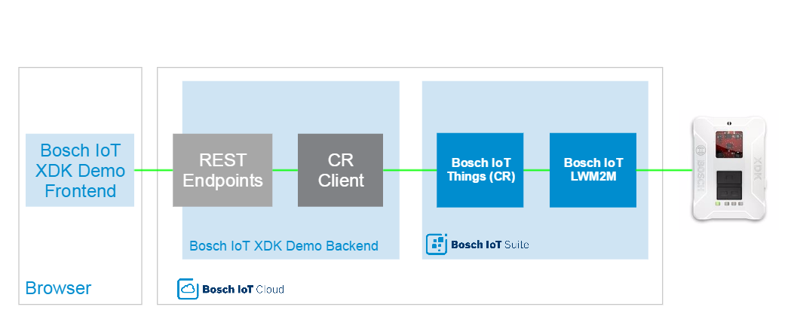

This guide is a collection of useful HowTos, tips and tricks to ease up your hackathon life in no particular order.
Run the Demo App Locally
Setup your Cloud Development Environment without Admin Rights (Windows)
Follow the Sensor Values
When developing your cloud app it is usually necessary to see the changes you have made, without having to push your app to the cloud.
The Bosch IoT XDK Demo App has two spring run time profiles. application-prod.yml is used, when running the app in the cloud. application-dev.yml is used, when running the app in all other scenarios. In this chapter we will show you how you can run the Bosch IoT XDK Demo App using the dev profile.
Note: When the app runs locally, it still uses the same cloud service instances of the Bosch IoT Suite services as the cloud instance of the app.
You will need the following software additionally to the software required in the Getting Started Guide:
To run your application do the following:
First complete the Getting Started Guide.
Note: The cloud services have to be bound to the cloud instance of your application, in order for you to be able to see all needed environment variables for step 3 of this chapter. This means that you have to push your app to the cloud prior to running it locally.
Install and run MongoDB with standard settings as described in the MongoDB documentation for your OS.
In "src/main/resources/config/application-dev.yml" make all necessary changes in the following part (replace everything in <> as described below):
cr:
alias: CR
aliasPassword: <addMe>
boschIotCentralRegistryEndpointUrl: wss://events.apps.bosch-iot-cloud.com:443/
#proxyHost: <addMe>
#proxyPort: <addMe>
keyStorePath: /keystore/CRClient.jks
keyStorePassword: <addMe>
sslKeyStorePath: /keystore/bosch-iot-cloud.jks
sslKeyStorePassword: jks
apiKey: <addMe>
restUrl: https://cr.apps.bosch-iot-cloud.com/
crClientId: <addMe>
applicationNamespace: com.bosch.bcx.demo
im3:
server: http://im3-api.apps.bosch-iot-cloud.com
clientId: <addMe>
clientSecret: <addMe>
tenantId: <addMe>
apiKey: <addMe>
aliasPassword and the keyStorePassword when generating the keystore and alias in the Getting Started GuideapiKey and the crClientId of your cr configuration go to the Developer Console of the Bosch IoT Cloud, login, open your space and click on the cloud instance of your application.
apiKey and the solution_id is your crClientIdim3 configuration click on Show credentials of your Bosch IoT Identity Management service
apiKeyclientIdclientSecrettenantId\CloudApp\src\main\java\com\bosch\demo\xdkcloudapp\Application.javaNote: If you don't have admin rights on your Windows system, you can still complete most of the Getting Started guide assuming you have an installed Oracle JDK 1.8. Without admin rights you won't be able to install the XDK Workbench thus you won't be able to reprogram or flash the XDK.
In order to have a working connection between the XDK and the Bosch IoT XDK Demo App, ask someone with admin rights to flash your XDK with the LWM2M firmware.
Note: Make sure you already have Java JDK 1.8 installed on your machine. If not, look for a portable Java 8 distribution and/or instructions to install Oracle Java JDK 1.8 without admin rights. If you have a Bosch PEACY system with admin rights and are still having problems installing JDK 1.8, use the following command in a admin shell to install JDK with the downloaded installer:
jdk-8u73-windows-x64.exe INSTALL_SILENT=0 STATIC=1.
Install Java, your preferred IDE, Maven and git as described in the steps 1-4 in the Setup your Cloud Development Environment Chapter of the Getting Started guide. (These can be done without admin rights).
In a suitable place create the following folder structure ...\nodejs\node_modules\.
Download the node js Windows binary (node.exe) from Node.js Download Site and copy it into ...\nodejs\node.exe.
Download the Cloud Foundry Command Line Interface binary (starting with cf-cli_6.15.0_winx64.zip) from Cloud Foundry GitHub Site and unpack the cf.exe to ...\nodejs\cf.exe.
Download the latest release of npm (starting with npm-3.7.1.zip) from NPM GitHub Site.
Unzip the npm-x.x.x folder to ...\nodejs\node_modules\ and rename it to get the following path ...\nodejs\node_modules\npm\bin\.
Copy ...\nodejs\node_modules\npm\bin\npm.cmd to ...\nodejs\node.cmd. The resulting structure should look as in the screenshot below.

Add the following paths to your PATH environment variable:
...\nodejs\ folderC:\Users\<windows_user>\AppData\Local\Programs\Git\cmdNote: The resulting PATH variable (system variable and user variable combined) cannot be longer than 1024 characters.
You can check your work by executing the following commands in a fresh terminal: (you should receive the version for each software)
npm -versionnode --versiongit --versioncf --versionResume with the next chapter in the Getting Started guide.
In order to make it easy for you to understand, how the Bosch IoT XDK Demo App works inside as quick as possible, we will follow two paths of data exchange between the UI and the XDK. First we will follow the sensor values from the XDK to the UI and second we will follow a configuration update from the UI to the XDK. As both ways already cover the most important parts of the code, it should be a lot easier for you to integrate a different device, change the XDK behavior or mingle and visualize with the data from all your devices.
But first of all let us look at the apps architecture once more.

As you can see there are two ways the Bosch IoT XDK Demo Frontend communicates with the Backend. One is using REST endpoints and the other is using web sockets. So for example a configuration update from the UI is using a REST API (green path) while for example sensor values are updated using a web socket (red path).

This chapter will help you understand, how the XDK sensor values are propagated through the code from the XDK to the Bosch IoT XDK Demo App UI.
Let's start in the LWM2M firmware on the Bosch XDK. Go to the XDK Workbench and open the sources folder. We will have a look at the barometer sensor. You will find the barometer update function in ...\XdkSensorLwm2mClient\source\SensorDeviceEnvironment.c line 82 within the SensorDeviceEnvironment_update(...) function.
void SensorDeviceEnvironment_update(enum ProcessingMode mode, bool notify)
{
Retcode_T returnValue = RETCODE_FAILURE;
SensorDeviceSampleDataFloat_T sample;
Environmental_Data_T envDataHolder = { INT32_C(0), UINT32_C(0), UINT32_C(0) };
if (!enableSensor) return;
/* Read temperature, pressure, humidity current values */
returnValue = Environmental_readData(xdkEnvironmental_BME280_Handle, &envDataHolder);
if ( RETCODE_OK == returnValue)
{
if (temperatureSensorDeviceData.enabled) {
sample.values[0] = TEMPERATURE_TO_C_FLOAT(envDataHolder.temperature);
SensorDevice_processDataFloat(mode, &temperatureSensorDeviceData, &sample);
}
if (humiditySensorDeviceData.enabled) {
sample.values[0] = HUMIDITY_TO_PERC_FLOAT(envDataHolder.humidity);
SensorDevice_processDataFloat(mode, &humiditySensorDeviceData, &sample);
}
if (pressureSensorDeviceData.enabled) {
sample.values[0] = PRESSURE_TO_HPA_FLOAT (envDataHolder.pressure);
SensorDevice_processDataFloat(mode, &pressureSensorDeviceData, &sample);
}
}
else
{
printf("Environmental Read actual Data Failed\n\r");
}
if (notify) {
if (SensorDevice_getDataFloat(&temperatureSensorDeviceData, &sample))
ObjectTemperature_setValue((float)sample.values[0]);
if (SensorDevice_getDataFloat(&humiditySensorDeviceData, &sample))
ObjectHumidity_setValue((float)sample.values[0]);
if (SensorDevice_getDataFloat(&pressureSensorDeviceData, &sample))
ObjectBarometer_setValue((float)sample.values[0]);
}
}
The data is read, processed (e.g. min,max or average value is calculated) and the LWM2M barometer object is set with the ObjectBarometer_setValue function.
Let's see what happens at that function. Go to ...\XdkSensorLwm2mClient\source\Lwm2mObject_Barometer.c line 141 and you will find the following code:
void ObjectBarometer_setValue(float sensorValue_hPa)
{
Lwm2mUtil_updateSingleResource(sensorValue_hPa, &updater);
}
This will call the following function in ...\XdkSensorLwm2mClient\source\Lwm2mUtil.c line 66
void Lwm2mUtil_updateSingleResource(float value, Lwm2m_Single_Resource_Update_T * updater)
{
if (LWM2M_MUTEX_LOCK(updater->mutex)) {
bool schedule = false;
updater->value = value;
if (!Callable_isAssigned(&updater->callback)) {
Callable_assign(&updater->callback, scheduleUpdateSingleResource);
schedule = true;
}
LWM2M_MUTEX_UNLOCK(updater->mutex);
if (schedule) Scheduler_enqueue(&updater->callback, RC_OK);
}
}
Here (over another helper function) the value is written to the LWM2M server using scheduleUpdateSingleResource.
The LWM2M Server (if it is registered to observe this resource/object) will receive the value update and write it to the Bosch IoT Things (Central Registry) service.
All this happens as soon as the XDK is initialized (look at ). In order to get the data into your Bosch IoT XDK Demo App you need to subscribe for the updates of the values in the Central Registry. This is done when you select an XDK device in the dashboard of the demo app frontend. Let's look what happen in the code when you do that.
First go to the beginning of ...\CloudApp\src\main\webapp\scripts\app\dashboard\dashboard.html to find the following code:
<div class="row">
<div class="col-md-5">
<form name="selectXDKForm">
<label for="repeatSelect">Select XDK:</label>
<select name="repeatSelect" id="repeatSelect" ng-model="currentXDKSensorSelected" class="form-control" ng-change="changeXDK()">
<option style="display:none" value="">Please select a XDK</option>
<option ng-repeat="xdksensor in xdkSensors" value="{{xdksensor.thingId}}"
class="{{getStyleClass(xdksensor.attributes.isOnline)}}">
{{xdksensor.thingId.split(":")[2]}} - {{getOnlineStatus(xdksensor.attributes.isOnline)}}
</option>
</select>
</form>
</div>
</div>
You can see that, whenever you select or ng-change an XDK device from the dropdown menu changeXDK() will be performed. Let's find out what it does.
Go to ...\CloudApp\src\main\webapp\scripts\app\dashboard\dashboard.controller.js line 87 where you will find the following code:
//On XDK Change logic
$scope.changeXDK = function () {
$scope.currentXDKSensor = $.grep($scope.xdkSensors, function (e) {
return e.thingId == $scope.currentXDKSensorSelected;
})[0];
if($scope.currentXDKSensor != null) {
XDKSubscription.start({id: $scope.currentXDKSensorSelected}, null);
$scope.subscribedSensors.push($scope.currentXDKSensorSelected);
$scope.updateChartData();
}
}
Here you can see that first of all the selected sensor becomes the currentXDKSensor. After that XDKSubscription.start(...) is called, the subscription is stored and the charts will update.
Find the following code at ...\CloudApp\src\main\webapp\scripts\components\cr\subscription.service.js:
angular.module('xdkcloudappApp')
.factory('XDKSubscription', function ($resource) {
return $resource('api/things/:id/subscription', null, {
'start': {
method: 'POST'
},
'stop': {
method: 'DELETE'
}
});
});
There you will see that using start you call a REST API in the backend with POST method. Let's go into the REST API definition to find out what happens next.
In ...\CloudApp\src\main\java\com\bosch\demo\xdkcloudapp\web\rest\ThingRestResource.java at line 159 find the following code:
@RequestMapping(value = "/things/{id:.+}/subscription",
method = RequestMethod.POST,
produces = MediaType.TEXT_PLAIN_VALUE)
@Timed
public ResponseEntity startChangeSubscription(@PathVariable String id) {
log.info("Starting Subscription for Thing {}", id);
try {
crService.createSubscription().thenRun(() -> {
crService.createFeaturesChangeSubscription(id);
crService.createAttributesChangeSubscriptionForThing(id);
crService.startSubscriptions();
crService.sendThingMessage(id, "startObservation", null);
}).get(10, TimeUnit.SECONDS);
} catch (InterruptedException e) {
e.printStackTrace();
} catch (ExecutionException e) {
e.printStackTrace();
} catch (TimeoutException e) {
e.printStackTrace();
}
return new ResponseEntity(HttpStatus.OK);
}
We can see that on invokation of the POST method the there are several methods from crService called. Let's look at some of them in the next step.
Go to ...\CloudApp\src\main\java\com\bosch\demo\xdkcloudapp\service\CRService.java line 338
public void createFeaturesChangeSubscription(String thingId) {
final ThingHandle thing = getThingHandle(thingId);
final String myThing_featureChangeRegistration = thingId + "_featuresChangeRegistration";
if (featureChangeRegistrations.containsKey(myThing_featureChangeRegistration)) {
log.info(myThing_featureChangeRegistration + " is already registered!");
} else {
FeaturesDataConsumer sensorDataConsumer = new FeaturesDataConsumer(thingId);
thing.registerForFeaturesChanges(myThing_featureChangeRegistration, sensorDataConsumer);
log.info("Created feature change subscription for Thing with thing ID: "
+ thing.getThingId());
featureChangeRegistrations.put(myThing_featureChangeRegistration, sensorDataConsumer);
}
}
Using a ThingHandle the createFeatureChangeSubscription(...) method registers a FeaturesDataConsumer and stores them in the featureChangeRegistrations`.
Similarly the attribute change subscription is handled, after which the subscriptions are started. From now on the sensorDataConsumer is informed about changes in the Central Registry on the associated XDK sensor thing.
Let's have a look how the FeaturesDataConsumer and the AttributesDataConsumer handles updates from the Central Registry.
Go to the end ...\CloudApp\src\main\java\com\bosch\demo\xdkcloudapp\service\CRService.java starting with line 842 to find the nested Class AttributesDataConsumer with the accept method:
public void accept(Change t) {
log.debug("Data Consumer executed for Attribute Change: " + t.getPath().toString() + ", " + t.getValue().toString());
//Send via local socket connection to UI
xdkSensorService.sendXDKData(t);
}
It simply forwards the changes to the xdkSensorService Let us have a look into that next.
Note: If you go to line 739 you will find the
FeaturesDataConsumerclass definition, which is a little more complicated. It combines the x,y and z axis value updates of the gyroscope into one update which makes it less readable. But in the end (line 808) it also forwards the data toxdkSensorService. It additionally line 834 persists the updates in the sensor history.
Go to ...\CloudApp\src\main\java\com\bosch\demo\xdkcloudapp\web\websocket\XDKSensorService.java line 56 to find the following code:
while (it.hasNext()) {
XDKSensorChangeDTO change = new XDKSensorChangeDTO();
Feature currentFeature = it.next();
change.setThingId(featureChange.getThingId());
change.setFeatureId(currentFeature.getId());
change.setProperties(thingChange.getValue().get().toString());
if(change.getFeatureId().equals("AlertNotification:0")) {
...
}
messagingTemplate.convertAndSend("/topic/xdksensor", change);
}
In the snippet above the featureChange gets prepared and sent with the topic "/topic/xdksensor" to the websocket. Let's see in the next step where this is picked up by the frontend.
At ...\CloudApp\src\main\webapp\scripts\components\cr\xdksensorsocket.service.js line 35 you can see the following piece of code that is executed on page load:
subscribe: function () {
connected.promise.then(function () {
subscriber = stompClient.subscribe("/topic/xdksensor", function (data) {
listener.notify(JSON.parse(data.body));
});
}, null, null);
},
There you will find that a listener will be notified whenever messages on the "/topic/xdksensor" topic come in. In the next step we will have a look what happens on the receiver side of that notification.
Go to ...\CloudApp\src\main\webapp\scripts\app\dashboard\dashboard.controller.js line 34 to find the following code:
XDKSensorSocket.receive().then(null, null, function (xdkSensorValues) {
if ($scope.currentXDKSensor != null && $scope.currentXDKSensor.thingId != null && $scope.currentXDKSensor.thingId == xdkSensorValues.thingId) {
...
var properties = JSON.parse(xdkSensorValues.properties);
if (properties != null && typeof properties == 'object') {
//Update feature properties with newest values
var keys = Object.keys(properties);
if(keys.length === 1) {
//Single property change has been sent
$scope.currentXDKSensor.features[xdkSensorValues.featureId].properties[keys[0]] = properties[keys[0]];
/*if(keys[0] == 'xValue' || keys[0] == 'yValue' || keys[0] == 'zValue' ) {
$scope.currentXDKSensor.features[xdkSensorValues.featureId].properties.sensorValue =
}*/
} else {
//Feature Block with all properties has been sent
$scope.currentXDKSensor.features[xdkSensorValues.featureId].properties = properties;
}
//Update the charts
$scope.updateChartData();
...
This code snippet maps the received data on the currentXDKSensor model and update the chart data afterwards.
This updates the view in the browser with the new values from the XDK.
This chapter will help you understand, what happens when you update the XDK configuration in the Bosch IoT XDK Demo App UI by following the update through the code to the XDK firmware.

Let's start with the html code right away. ...\CloudApp\src\main\webapp\scripts\app\xdkconfig\xdkconfig.html represents the static part of the Configuration tab of the Bosch XDK IoT Demo App. From line 93 onward you can see the configuration form with the Angular JS tag ng-submit=updateConfig().
<form class="form-horizontal" role="form" name="form" novalidate ng-submit="updateConfig()" show-validation>
<div class="form-group">
<label for="field_accelEnabled" class="col-sm-2 control-label">
<span>Accelerometer</span>
</label>
...
Also have a look around line 195 to find out how Angular.js. In this code snippet you can see how the transport interval value is bound to the angular model selectedXDKDevice, as well as how to validate and react on invalid user input.
<div class="form-group">
<label for="field_transportInterval" class="col-sm-2 control-label">
<span>Transport Interval (ms)</span>
</label>
<div class="col-sm-2">
<input type="number" class="form-control" name="transportInterval"
id="field_transportInterval"
ng-model="selectedXDKDevice.transportInterval" ng-pattern="regex">
<div ng-show="form.transportInterval.$dirty && form.transportInterval.$invalid">
<p class="help-block"
translate="xdkcloudappApp.xdkconfig.messages.validate.frequency.range">
Only values between 1000 and 30000 are valid
</p>
</div>
</div>
</div>
To check what happens on submit, that is what updateConfig() does, go to ...\CloudApp\src\main\webapp\scripts\app\xdkconfig\xdkconfig.controller.js line 41 to find it's definition.
$scope.updateConfig = function () {
XDKChangeConfig.update({id: $scope.selectedXDKId}, $scope.selectedXDKDevice)
.$promise.then(function (data) {
$scope.error = null;
$scope.success = 'OK';
}, function (error) {
$scope.success = null;
$scope.error = 'ERROR';
});
};
As you can see the updateConfig() function calls an update function on XDKChangeConfig passing the selected XDK's ID and the selected device (incl. its properties).
If you wondered, where to find the ng-pattern="regex" for above used form validation, go to line 9 where you will find the following definition:
$scope.regex = /^([1-9][0-9]{3,4}|30000)$/;
So where is this XDKChangeConfig defined? Let's have a look into ...\CloudApp\src\main\webapp\scripts\components\cr\changeconfig.service.js.
angular.module('xdkcloudappApp')
.factory('XDKChangeConfig', function ($resource) {
return $resource('api/things/:id/changeSensorConfiguration', null, {
'update': {
method: 'PUT'
}
});
});
So here is the definition of XDKChangeConfig.update and as you can see it calls a REST API at 'api/things/:id/changeSensorConfiguration' with PUT method using the ID and the configuration properties passed earlier.
As you might have noticed, so far we were only moving within the ...\CloudApp\src\main\webapp folder of the application sources. As this is a single page application all used js files need to be included in ...\CloudApp\src\main\webapp\index.html.
We are through the frontend part of this path now. Let's have a look into the backend and find the REST API resource next.
The Rest API we are looking for can be found at ...CloudApp\src\main\java\com\bosch\demo\xdkcloudapp\web\rest\ThingRestResource.java. In line 87 and following we can find what happens with our PUT method call from the UI.
@RequestMapping(value = "/things/{id:.+}",
method = RequestMethod.PUT,
produces = MediaType.APPLICATION_JSON_VALUE)
@Timed
public ResponseEntity<String> changeThingAttributes(@PathVariable String id, @RequestBody String attributes) {
log.debug("REST request to change Thing : {}", id);
JsonObject attributeObj = JsonFactory.readFrom(attributes).asObject();
crService.changeAttributesForThing(id, attributeObj);
return new ResponseEntity<String>(attributeObj.toString(), HttpStatus.OK);
}
As you can see, after parsing the attributes to a json format, we are calling crService.changeAttributesForThing(...) method so let us go there next.
Navigate to ...\CloudApp\src\main\java\com\bosch\demo\xdkcloudapp\service\CRService.java line 458 to find the changeAttributeForThing(...) method.
public void changeAttributesForThing(String thingId, JsonObject value) {
/* Create a handle for an existing thing */
final ThingHandle thing = getThingHandle(thingId);
try {
thing.setAttributes(value).whenComplete((change, throwable) -> {
if (throwable != null) {
log.error("Changing Attributes for thing failed {}", throwable);
} else
log.debug("Changing Attributes successful", change);
}).get(5, TimeUnit.SECONDS);
} catch (InterruptedException e) {
e.printStackTrace();
} catch (ExecutionException e) {
e.printStackTrace();
} catch (TimeoutException e) {
e.printStackTrace();
}
}
This is already part of our Central Registry Java Client implementation. Here we are getting a thing handle from the Central Registry, which is the representation of our XDK device in the Central Registry (Bosch IoT Things). The thing is then reset with the new attributes (our changed configuration) using Java 8 syntax.
From here the Bosch IoT Thing (Central Registry) service notifies the LWM2M server about the change as the latter is subscribed as an observer for changes on this thing.
The LWM2M server propagates the changes mapping the thing on an LWM2M object and sends this information down to the XDK device.
Let's have a look what the XDK device does with this information. Go to the XDK Workbench and open ...\XdkSensorLwm2mClient\source\Lwm2mObject_SensorDevice.c to see the sensor device LWM2M object structure:
struct SensorDeviceResource_S sensorDeviceResources =
{
{ 0, LWM2M_DYNAMIC(rw_interval) },
{ 1, LWM2M_BOOL(true) },
{ 2, LWM2M_BOOL(true) },
{ 3, LWM2M_BOOL(true) },
{ 4, LWM2M_BOOL(true) },
{ 5, LWM2M_BOOL(true) },
{ 6, LWM2M_BOOL(true) },
{ 7, LWM2M_BOOL(true) },
{ 8, LWM2M_DYNAMIC(rw_preprocessingMode) },
{ 9, LWM2M_STRING_RO("") },
};
The first resource { 0, LWM2M_DYNAMIC(rw_interval) }, represents the update interval that you set in the Bosch IoT XDK Demo App UI. As you can see, for this resource there is a specific update function defined. Let's have a look at it.
In the same file look at line 122 to see the following code snippet:
static retcode_t rw_interval(Lwm2mSerializer_T *serializer_ptr, Lwm2mParser_T *parser_ptr)
{
if (NULL != parser_ptr) {
/* write value */
int32_t value;
retcode_t rc = Lwm2mParser_getInt(parser_ptr, &value);
if (RC_OK == rc && value != g_transport_interval) {
if (LWM2M_MUTEX_LOCK(mutex)) {
g_transport_interval = value;
LWM2M_MUTEX_UNLOCK(mutex);
printf("tranport interval changed: %ld\n", (long)value);
if (started) {
Lwm2m_URI_Path_T path = {OBJECTS_IX_SENSORDEVICE_0, OBJECTS_IX_SENSORDEVICE_0, SENSORDEVICE_RESOURCES_INDEX(transportInterval)};
Lwm2mReporting_resourceChanged(&path);
}
}
}
return rc;
You can see how the transport interval value is set and that the change is reported using the LWM2M URI.
This finishes this chapter.